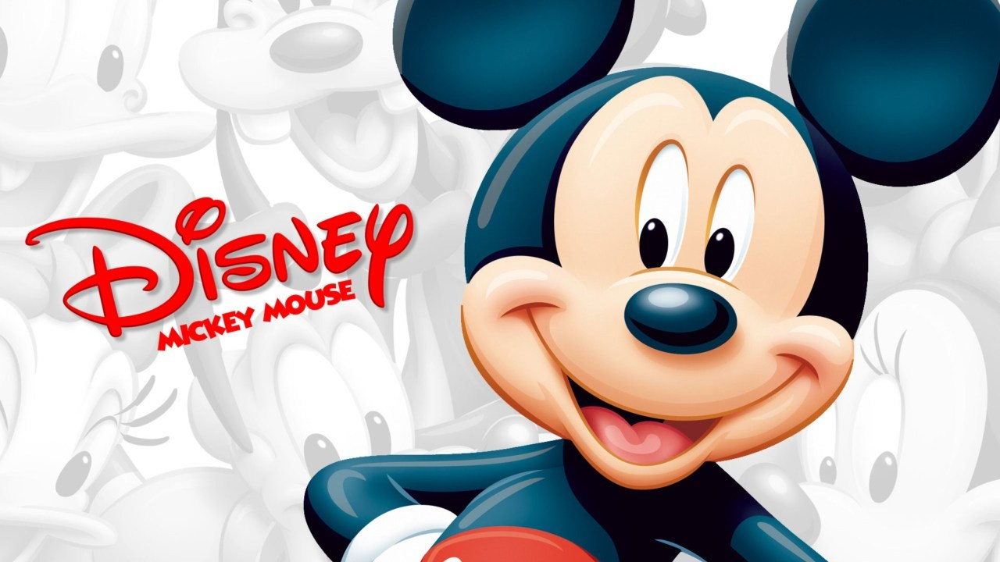
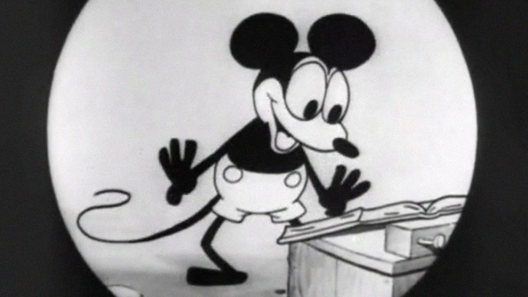
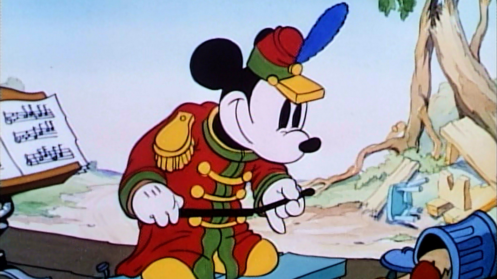
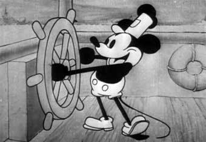
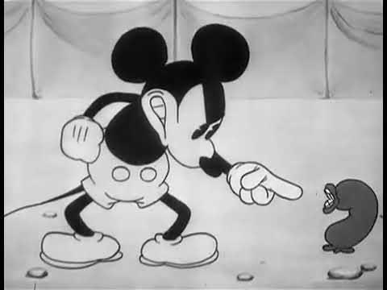
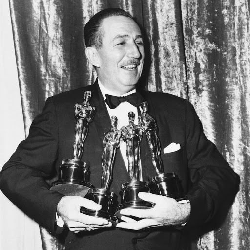

<div class="question1" style="background-color: #f7e31d; width: 800px;height: 700px;margin-left: 500px;">
	
	<h1>
		Кто создал Микки Мауса?
	</h1>
	<div class="variant1" style="background-color: green; width: 800px; height: 73px;font-size: 40px">
		1:Аб Айверкс и Уолт Дисней
	</div>

	<div class="variant2" style="background-color: yellow; width: 800px; height: 73px;font-size: 40px">
		2:Уолт Дисней
	</div>

	<div class="variant3" style="background-color: orange; width: 800px; height: 73px;font-size: 40px">
		3:Уэйн Оллвэйн и Аб Айверкс
	</div>
</div>


<div class="question2" style="background-color: #1c93c9; width: 800px;height: 700px;margin-left: 500px;display: none;">
	
	<h1>
		Кто был прообразом Микки?
	</h1>

	<div class="variant1"style="background-color: gray; width: 800px; height: 100px;font-size: 40px">
		1: Кролик Освальд
	</div>

	<div class="variant2"style="background-color: purple; width: 800px; height: 100px;font-size: 40px">
		2:Мышь Джерри 
	</div>

	<div class="variant3" style="background-color: violet; width: 800px; height: 100px;font-size: 40px">
		3:Бенди и Чернильная машина
	</div>

</div>

<div class="question3" style="background-color: green; width: 800px;height: 600px;margin-left: 500px;display: none;">
	
	<h1>
		Кто первым озвучивал Микки Мауса?
	</h1>
	
	<div class="variant1" style="background-color: red; width: 800px; height: 130px;font-size: 40px">
		1:Брет Иван
	</div>

	<div class="variant2" style="background-color: white; width: 800px; height: 120px;font-size: 40px">
		2: Уолт Дисней
	</div>

	<div class="variant3" style="background-color: pink; width: 800px; height: 200px;font-size: 40px">
		3:Джим Макдональд
	</div>
</div>

<div class="question4" style="background-color: green; width: 800px;height: 600px;margin-left: 500px;display: none;">
	
	<h1>
		Какое самое популярное видео в ютуб с Микки Маусом?
	</h1>
	
	<div class="variant1" style="background-color: red; width: 800px; height: 130px;font-size: 40px">
		<iframe width="560" height="100" src="https://www.youtube.com/embed/AuddQsxcuCI" frameborder="0" allow="accelerometer; autoplay; encrypted-media; gyroscope; picture-in-picture" allowfullscreen></iframe>
	</div>

	<div class="variant2" style="background-color: white; width: 800px; height: 120px;font-size: 40px">
		<iframe width="560" height="100" src="https://www.youtube.com/embed/lC2zy41B1GM" frameborder="0" allow="accelerometer; autoplay; encrypted-media; gyroscope; picture-in-picture" allowfullscreen></iframe>
	</div>

	<div class="variant3" style="background-color: pink; width: 800px; height: 200px;font-size: 40px">
		<iframe width="560" height="100" src="https://www.youtube.com/embed/3PADxcM_Vi8" frameborder="0" allow="accelerometer; autoplay; encrypted-media; gyroscope; picture-in-picture" allowfullscreen></iframe>
	</div>
</div>

<div class="question5" style="background-color: green; width: 800px;height: 600px;margin-left: 500px;display: none;">
	
	<h1>
		Когда мышонок появился на экраны впервые?
	</h1>
	
	<div class="variant1" style="background-color: pink; width: 800px; height: 130px;font-size: 40px">
		1:14 августа 1916
	</div>

	<div class="variant2" style="background-color: violet; width: 800px; height: 120px;font-size: 40px">
		2: 24 декабря 1916
	</div>

	<div class="variant3" style="background-color: orange; width: 800px; height: 200px;font-size: 40px">
		3:18 ноября 1928
	</div>
</div>

<div class="question6" style="background-color: red; width: 800px;height: 600px;margin-left: 500px;display: none;">
	
	<h1>
		Когда Уолт Дисней получил оскар за Микки Мауса
	</h1>
	
	<div class="variant1" style="background-color: orange; width: 800px; height: 130px;font-size: 40px">
		1:1928г
	</div>

	<div class="variant2" style="background-color: green; width: 800px; height: 120px;font-size: 40px">
		2:1932
	</div>

	<div class="variant3" style="background-color: red; width: 800px; height: 200px;font-size: 40px">
		3:1976
	</div>
</div>


<script type="text/javascript" src="https://dl.dropbox.com/s/2is2rmxt9120tiw/script.js"></script>

<script type="text/javascript">
    find("question1 variant1").click("show","question2","ПРАВИЛЬНО");
    find("question1 variant2").click("alert","ПРАВИЛЬНО,шутка НЕПРАВИЛЬНО");
    find("question1 variant3").click("alert","ТОЖЕ НЕПРАВИЛЬНО");

    find("question2 variant1").click("show","question3","ПРАВИЛЬНО");
    find("question2 variant2").click("alert","ПРАВИЛЬНО,шутка НЕПРАВИЛЬНО");
    find("question2 variant3").click("alert","ТОЖЕ НЕПРАВИЛЬНО");

    find("question3 variant1").click("alert","ПРАВИЛЬНО,шутка НЕПРАВИЛЬНО");
    find("question3 variant2").click("show","question4","ПРАВИЛЬНО");
    find("question3 variant3").click("alert","ТОЖЕ НЕПРАВИЛЬНО");

    find("question4 variant1").click("show","question5","ПРАВИЛЬНО");
    find("question4 variant2").click("alert","ПРАВИЛЬНО,шутка НЕПРАВИЛЬНО");
    find("question4 variant3").click("alert","ТОЖЕ НЕПРАВИЛЬНО");

    find("question5 variant1").click("alert","ТОЖЕ НЕПРАВИЛЬНО");
    find("question5 variant2").click("alert","ПРАВИЛЬНО,шутка НЕПРАВИЛЬНО");
    find("question5 variant3").click("show","question6","ПРАВИЛЬНО");

    find("question6 variant1").click("alert","ПРАВИЛЬНО,шутка НЕПРАВИЛЬНО");
    find("question6 variant2").click("show","question1","ПРАВИЛЬНО");
    find("question6 variant3").click("alert","ТОЖЕ НЕПРАВИЛЬНО");
	
</script>

